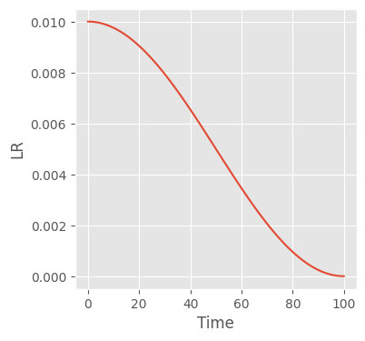
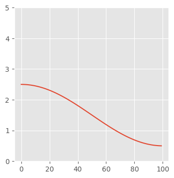
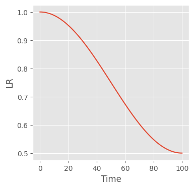
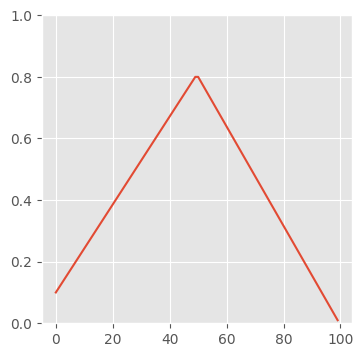
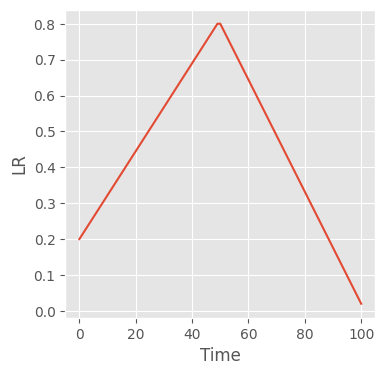

from functools import partial
import matplotlib.pyplot as plt
import torch
from torch import nnOptimizers and Schedulers: Homework
Implementing Cosine Annealing and the OneCycle scheduler from scratch
plt.style.use("ggplot")Recall, we want something to situate within this interface
class BaseSchedulerCB(Callback):
"""Base callback class for schedulers"""
def __init__(self, scheduler_f, **kwargs):
self.scheduler_f = scheduler_f
self.sched_kwargs = kwargs
self.sched = None
def before_fit(self, learn):
self.sched = self.scheduler_f(learn.opt, **self.sched_kwargs) # 👈
def _step(self, learn):
if learn.training:
self.sched.step() # 👈 That is:
- It takes the optimizer as the first argument of its constructor
- It steps once per batch or once per epoch, if overwritten. This is implemented in the
LRSchedulersuper class.
We also need to implement the LRScheduler interface:
.get_lr()returns the optimizer learner rate as a function of the internal property,_step_count
torch.optim.lr_scheduler.LRScheduler??Init signature: torch.optim.lr_scheduler.LRScheduler( optimizer, last_epoch=-1, verbose=False, ) Docstring: <no docstring> Source: class LRScheduler: def __init__(self, optimizer, last_epoch=-1, verbose=False): # Attach optimizer if not isinstance(optimizer, Optimizer): raise TypeError(f'{type(optimizer).__name__} is not an Optimizer') self.optimizer = optimizer # Initialize epoch and base learning rates if last_epoch == -1: for group in optimizer.param_groups: group.setdefault('initial_lr', group['lr']) else: for i, group in enumerate(optimizer.param_groups): if 'initial_lr' not in group: raise KeyError("param 'initial_lr' is not specified " f"in param_groups[{i}] when resuming an optimizer") self.base_lrs = [group['initial_lr'] for group in optimizer.param_groups] self.last_epoch = last_epoch # Following https://github.com/pytorch/pytorch/issues/20124 # We would like to ensure that `lr_scheduler.step()` is called after # `optimizer.step()` def with_counter(method): if getattr(method, '_with_counter', False): # `optimizer.step()` has already been replaced, return. return method # Keep a weak reference to the optimizer instance to prevent # cyclic references. instance_ref = weakref.ref(method.__self__) # Get the unbound method for the same purpose. func = method.__func__ cls = instance_ref().__class__ del method @wraps(func) def wrapper(*args, **kwargs): instance = instance_ref() instance._step_count += 1 wrapped = func.__get__(instance, cls) return wrapped(*args, **kwargs) # Note that the returned function here is no longer a bound method, # so attributes like `__func__` and `__self__` no longer exist. wrapper._with_counter = True return wrapper self.optimizer.step = with_counter(self.optimizer.step) self.verbose = verbose self._initial_step() def _initial_step(self): """Initialize step counts and performs a step""" self.optimizer._step_count = 0 self._step_count = 0 self.step() def state_dict(self): """Returns the state of the scheduler as a :class:`dict`. It contains an entry for every variable in self.__dict__ which is not the optimizer. """ return {key: value for key, value in self.__dict__.items() if key != 'optimizer'} def load_state_dict(self, state_dict): """Loads the schedulers state. Args: state_dict (dict): scheduler state. Should be an object returned from a call to :meth:`state_dict`. """ self.__dict__.update(state_dict) def get_last_lr(self): """ Return last computed learning rate by current scheduler. """ return self._last_lr def get_lr(self): # Compute learning rate using chainable form of the scheduler raise NotImplementedError def print_lr(self, is_verbose, group, lr, epoch=None): """Display the current learning rate. """ if is_verbose: if epoch is None: print(f'Adjusting learning rate of group {group} to {lr:.4e}.') else: epoch_str = ("%.2f" if isinstance(epoch, float) else "%.5d") % epoch print(f'Epoch {epoch_str}: adjusting learning rate of group {group} to {lr:.4e}.') def step(self, epoch=None): # Raise a warning if old pattern is detected # https://github.com/pytorch/pytorch/issues/20124 if self._step_count == 1: if not hasattr(self.optimizer.step, "_with_counter"): warnings.warn("Seems like `optimizer.step()` has been overridden after learning rate scheduler " "initialization. Please, make sure to call `optimizer.step()` before " "`lr_scheduler.step()`. See more details at " "https://pytorch.org/docs/stable/optim.html#how-to-adjust-learning-rate", UserWarning) # Just check if there were two first lr_scheduler.step() calls before optimizer.step() elif self.optimizer._step_count < 1: warnings.warn("Detected call of `lr_scheduler.step()` before `optimizer.step()`. " "In PyTorch 1.1.0 and later, you should call them in the opposite order: " "`optimizer.step()` before `lr_scheduler.step()`. Failure to do this " "will result in PyTorch skipping the first value of the learning rate schedule. " "See more details at " "https://pytorch.org/docs/stable/optim.html#how-to-adjust-learning-rate", UserWarning) self._step_count += 1 with _enable_get_lr_call(self): if epoch is None: self.last_epoch += 1 values = self.get_lr() else: warnings.warn(EPOCH_DEPRECATION_WARNING, UserWarning) self.last_epoch = epoch if hasattr(self, "_get_closed_form_lr"): values = self._get_closed_form_lr() else: values = self.get_lr() for i, data in enumerate(zip(self.optimizer.param_groups, values)): param_group, lr = data param_group['lr'] = lr self.print_lr(self.verbose, i, lr, epoch) self._last_lr = [group['lr'] for group in self.optimizer.param_groups] File: ~/miniforge3/envs/slowai/lib/python3.10/site-packages/torch/optim/lr_scheduler.py Type: type Subclasses: _LRScheduler, LambdaLR, MultiplicativeLR, StepLR, MultiStepLR, ConstantLR, LinearLR, ExponentialLR, SequentialLR, PolynomialLR, ...
First, let’s write helpers.
def plot_scheduler(sched, n_batches):
fig, ax = plt.subplots(figsize=(4, 4))
lrs = []
lrs.append(sched.get_last_lr())
for _ in range(n_batches):
sched.optimizer.step()
sched.step()
lrs.append(sched.get_last_lr())
ax.plot(lrs)
ax.set(xlabel="Time", ylabel="LR")Now, we can do some dummy training to help with plotting and ensure it actually works in a training loop
X = torch.randn(100, 1) # 100 samples with 1 feature
y = 2 * X + 1 + torch.randn(100, 1) # Add some noise
class LinearRegressionModel(nn.Module):
def __init__(self, input_dim, output_dim):
super().__init__()
self.linear = nn.Linear(input_dim, output_dim)
def forward(self, x):
return self.linear(x)
def train(scheduler_f, nbatches=100, lr=0.01):
model = LinearRegressionModel(1, 1)
criterion = nn.MSELoss()
optimizer = torch.optim.SGD(model.parameters(), lr=lr)
scheduler = scheduler_f(optimizer)
lrs = []
for epoch in range(nbatches):
lrs.append(scheduler)
outputs = model(X)
loss = criterion(outputs, y)
optimizer.zero_grad()
loss.backward()
optimizer.step()
plot_scheduler(scheduler, n_batches)n_batches = 100
scheduler_f = partial(torch.optim.lr_scheduler.CosineAnnealingLR, T_max=n_batches)
train(scheduler_f, n_batches)
Part I: Cosine Annealing
t_max = 100
lr_max = 2.5
lr_min = 0.5
x = torch.arange(t_max)
y = (1 + torch.cos(x * 3.141 / t_max)) / 2 * (lr_max - lr_min) + lr_min
fig, ax = plt.subplots(figsize=(4, 4))
ax.plot(x, y)
ax.set_ylim(0, 5);
class CosineAnnealingLRScheduler(torch.optim.lr_scheduler.LRScheduler):
def __init__(
self,
optimizer,
lr_max: float,
lr_min: float,
t_max: int,
last_epoch=-1,
verbose=False,
):
# That that the superclass constructor calls .step() on the instance,
# such that we need one additional learning rate beyond the number of
# steps associated with each batch
xs = torch.arange(t_max + 1).float()
self.lrs = (1 + torch.cos(xs * 3.141 / t_max)) / 2 * (lr_max - lr_min) + lr_min
super().__init__(optimizer, last_epoch, verbose)
def get_lr(self):
return [self.lrs[self._step_count - 1] for _ in self.optimizer.param_groups]scheduler_f = partial(
CosineAnnealingLRScheduler,
lr_max=1.0,
lr_min=0.5,
t_max=n_batches,
)
train(scheduler_f, n_batches)
Part II: 1 cycle
t_max = 100
lr_start, lr_max, lr_end = 0.1, 0.8, 0.01lra = torch.linspace(lr_start, lr_max, t_max // 2)
lrb = torch.linspace(lr_max, lr_end, t_max // 2 + t_max % 2)
lrs = torch.cat((ya, yb))fig, ax = plt.subplots(figsize=(4, 4))
ax.plot(x, lrs)
ax.set_ylim(0, 1);
class OneCycleLRScheduler(torch.optim.lr_scheduler.LRScheduler):
def __init__(
self,
optimizer,
lrs,
t_max: int,
last_epoch=-1,
verbose=False,
):
# That that the superclass constructor calls .step() on the instance,
# such that we need one additional learning rate beyond the number of
# steps associated with each batch
lr_start, lr_max, lr_end = lrs
lra = torch.linspace(lr_start, lr_max, t_max // 2)
lrb = torch.linspace(lr_max, lr_end, t_max // 2 + (t_max % 2) + 1)
self.lrs = torch.cat((lra, lrb))
print(len(self.lrs))
super().__init__(optimizer, last_epoch, verbose)
def get_lr(self):
return [self.lrs[self._step_count - 1] for _ in self.optimizer.param_groups]scheduler_f = partial(
OneCycleLRScheduler,
lrs=(0.2, 0.8, 0.02),
t_max=n_batches,
)
train(scheduler_f, n_batches)101